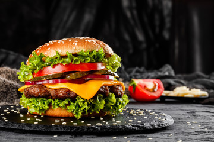

Look at this beautiful burger
Here is my favorite lamb

Description
You'll find a detailed ingredient list and step-by-step instructions in the recipe below, but let's go over the basics:
The ingredients:
- 1 pound ground beef (85% lean)
- 2 tablespoons soy sauce
- 1 tablespoon sake
- 1 tablespoon mirin
- 1 teaspoon Worcestershire sauce
- 1 teaspoon sriracha hot pepper sauce
- 1 teaspoon brown sugar
- 4 slider-size burger buns
- 4 leaves lettuce
- 4 slices tomato
Here is How you make it:
- Preheat grill to medium-high heat and lightly oil the grate.
- Break up ground beef with the tip of a fork in a bowl. Drizzle in the soy sauce, sake, mirin, Worcestershire sauce, and sriracha sauce; crumble in brown sugar. Use tines of a fork to evenly distribute ingredients. Finish mixing with your hands (ideally your hands should be very cold for this). Shape into 4 equal-sized patties.
- Grill until browned and cooked through turning once, 3 or 4 minutes per side. When burgers develop a slight dome shape and juices begin to come through the top surface, they are done. An instant-read thermometer inserted into the center should read at least 160 degrees F (70 degrees C).
- Serve burgers on slider buns with lettuce and tomato slices.
Return Home